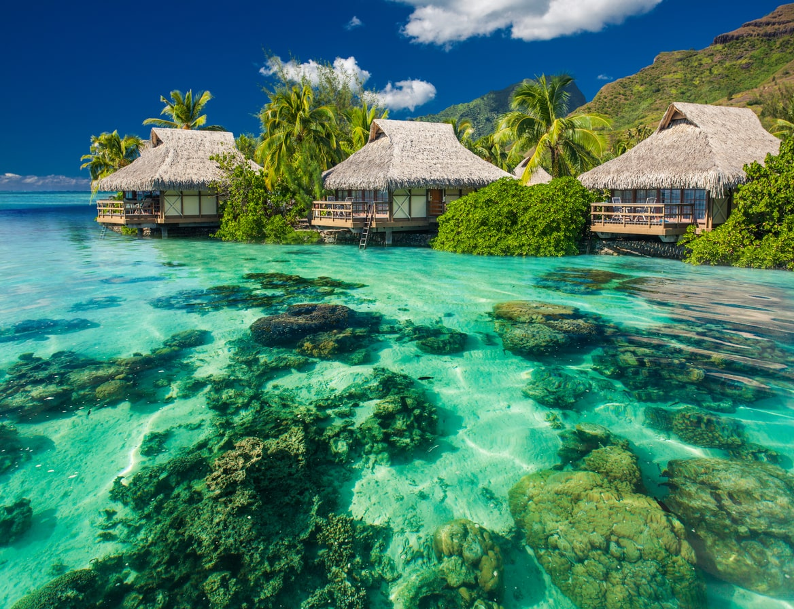

Polinesia Francese 🌺

🏝️ Polinesia Francese: L'Ultimo Eden del Pacifico La Polinesia Francese, incastonata nel cuore del Pacifico, è un sogno di viaggio che include isole leggendarie come Bora Bora, Moorea e Tahiti. È la quintessenza dell'esclusività e del paesaggio da cartolina, con imponenti montagne vulcaniche verdeggianti che si tuffano in lagune color smeraldo, protette da barriere coralline. Offre un'esperienza di lusso indimenticabile, snorkeling spettacolare e l'abbraccio caloroso della cultura Ma'ohi.
- 🎾 Attività: immersioni con mante, crociere al tramonto, danze polinesiane
- 🍳 Cibo tipico: poisson cru (pesce crudo con cocco), frutti tropicali
- ⭐ Luoghi iconici: Bora Bora, Moorea, Tahiti Nui
➡️ Pagina Wikipedia
📍 Posizione su Maps
https://www.booking.com/country/pf.it.html